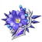
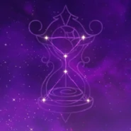

La perezosa pero sabia bibliotecaria de los Caballeros de Favonius. En realidad, fue considerada por la academia de Sumeru como su graduada más sobresaliente en los ultimos dos siglos.
Artefacto/s recomendados



Atq%

Bono electro

Daño / Prob. critica
Prob. critica > Daño critio > Atq%
Talentos

Pasivas
Constelacion
Armas Recomendadas


Personajes compatibles